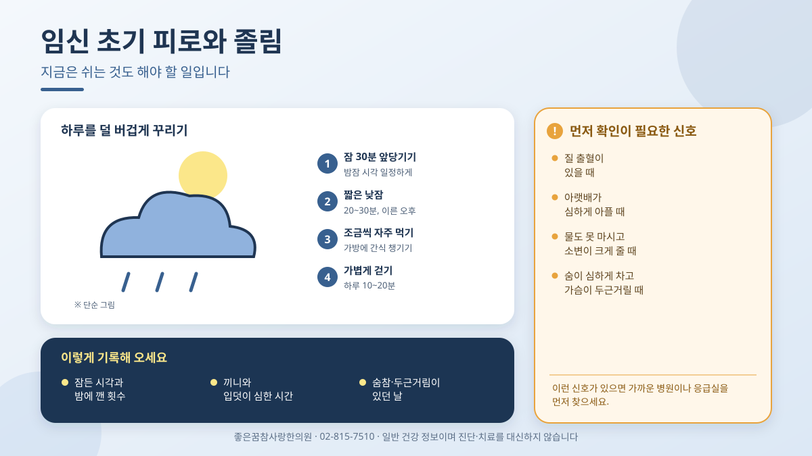

이종호 한의사 감수좋은꿈참사랑한의원 대표원장 (한의사 면허번호 19769)발행 2026-11-26 · 수정 2026-11-26
이 글의 차례
점심을 먹고 자리에 돌아오면 눈꺼풀이 저절로 내려앉습니다. 커피 한 잔이면 버티던 오후였는데, 이제는 커피도 마음대로 마실 수 없고 모니터 글자가 흐릿하게 번집니다. 퇴근하고 집에 오면 씻을 힘도 없어 소파에 쓰러지듯 눕게 됩니다.
임신 사실을 알고 기쁜 마음도 잠시, 많은 분들이 이렇게 묻습니다. "원래 이렇게까지 피곤한 건가요? 제가 너무 약한 걸까요?" 임신 초기의 피로는 생각보다 훨씬 많은 분들이 겪는 일입니다. 주변에 아직 임신을 알리지 않은 시기라 혼자 버티느라 더 힘들기도 합니다.
이 시기의 피로는 게으름이나 의지의 문제가 아닙니다. 몸은 겉으로 드러나지 않는 곳에서 아기를 위한 집을 짓느라 쉴 새 없이 일하고 있습니다. 잠이 쏟아지는 것도, 조금만 움직여도 지치는 것도 그 공사의 소리라고 생각하시면 조금은 마음이 놓이실 겁니다.
다만 빈혈이나 갑상선, 입덧으로 인한 탈수처럼 함께 살펴야 할 이유가 숨어 있을 때도 있습니다. 이 글에서는 임신 초기 피로가 왜 생기는지, 어떤 피로는 조금 더 들여다봐야 하는지, 하루를 어떻게 꾸리면 좋은지를 정리해 보았습니다.
왜 임신 초기에는 이렇게 피곤하고 졸릴까요
임신 초기에 몸이 가장 먼저 겪는 변화는 호르몬입니다. 임신을 유지하는 호르몬이 크게 늘어나는데, 이 호르몬은 몸을 차분하게 가라앉히고 졸음을 부르는 성질이 있습니다. 낮에도 눈이 감기고, 밤에는 일찍 잠이 쏟아지는 것이 이 때문인 경우가 많습니다.
동시에 몸속 혈액량이 조금씩 늘어나기 시작합니다. 심장은 더 많은 피를 돌리느라 평소보다 바쁘게 뛰고, 혈관은 느슨하게 넓어지며 혈압이 살짝 낮아지기도 합니다. 가만히 있어도 몸이 일을 하고 있는 셈이니, 예전과 같은 하루를 보내도 훨씬 지치는 것이 자연스럽습니다.
여기에 입덧이 겹치면 피로는 더 커집니다. 먹고 싶은 것이 없고 먹어도 속이 불편하니 에너지가 들어오지 않고, 밤에도 속이 메스꺼워 깊이 자지 못합니다. 소변이 자주 마려워 밤에 깨는 일도 이 시기에 시작되는 경우가 많습니다.
마음의 긴장도 빼놓을 수 없습니다. 아기가 잘 자라고 있을지, 직장에는 언제 알려야 할지, 앞으로 생활은 어떻게 바뀔지 생각이 많아지면 몸은 쉬어도 머리는 쉬지 못합니다. 이런 긴장이 쌓이면 잠을 자도 개운하지 않은 피로로 이어집니다.
흔한 피로와 조금 더 살펴야 할 피로
임신 초기 피로는 대부분 시간이 지나며 서서히 나아지는 흐름을 보입니다. 많은 분들이 임신 중기에 들어서면 몸이 한결 가벼워졌다고 말씀하십니다. 그러나 아래와 같은 모습이 함께 있다면 피로의 다른 이유를 함께 확인해 보는 것이 좋습니다.
- 조금만 걸어도 숨이 차고 가슴이 두근거리는 경우
- 얼굴이나 입술, 손톱이 유난히 창백해 보이는 경우
- 추위를 심하게 타고 몸이 붓고 변비가 심해진 경우
- 반대로 더위를 많이 타고 손이 떨리며 체중이 줄어드는 경우
- 입덧으로 물도 잘 못 마시고 소변 양이 줄어든 경우
- 기분이 계속 가라앉고 아무것도 하고 싶지 않은 날이 이어지는 경우
숨참과 창백함은 빈혈을, 추위와 붓기 또는 더위와 떨림은 갑상선의 변화를 떠올리게 합니다. 이런 부분은 산부인과에서 혈액 검사로 확인할 수 있으니 다음 검진 때 꼭 말씀해 주세요. 마음이 계속 가라앉는다면 그 마음 역시 피로를 키우는 중요한 원인이 될 수 있습니다.
피곤한 것과 졸린 것은 조금 다릅니다
진료실에서 "피곤하다"는 말을 들으면 저는 조금 더 나누어 여쭙니다. 눕기만 하면 바로 잠드는 졸림인지, 누워도 잠은 안 오는데 몸이 무겁고 기운이 없는 피로인지에 따라 살펴볼 방향이 달라지기 때문입니다.
임신 초기의 졸림은 호르몬의 영향이 큰 편이라, 짧게라도 자고 나면 조금 나아지는 경우가 많습니다. 반면 잠을 자도 개운하지 않고 몸이 계속 처진다면, 밤잠의 질이나 식사량, 빈혈, 마음의 긴장을 함께 살펴봐야 합니다. 두 가지가 섞여 있는 분도 많습니다.
말로 설명하기 어려우시면 "자도 자도 졸려요", "잠은 안 오는데 몸이 무거워요", "오후만 되면 쓰러질 것 같아요"처럼 떠오르는 대로 말씀해 주셔도 충분합니다.
일하는 임산부라면 이렇게 버텨 보세요
임신 초기는 아직 배가 나오지 않아 주변에서 사정을 알기 어려운 시기입니다. 그래서 피곤해도 내색하지 못하고 평소처럼 일하다 보면 오후에 기운이 바닥나기 쉽습니다. 믿을 만한 동료나 상사 한 사람에게라도 미리 이야기해 두면 마음이 한결 가벼워집니다.
점심시간의 10~15분은 눈을 감고 쉬는 시간으로 따로 떼어 두세요. 책상에 엎드려도 좋고, 휴게실 의자에 기대어도 좋습니다. 짧은 휴식이 오후를 버티는 힘이 됩니다. 회의가 길어질 때는 물을 한 모금씩 마시고, 자리에서 잠깐 일어나 다리를 풀어 주세요.
출퇴근 시간에는 임산부 배지를 달고 배려석을 이용하시길 권합니다. 배가 나오지 않았다고 망설이는 분이 많지만, 지금이 가장 피곤하고 어지럽기 쉬운 시기입니다. 앉아서 가는 몇십 분이 하루의 기운을 지켜 줍니다.
커피와 에너지 음료는 어떻게 할까요
피곤할 때 가장 먼저 손이 가는 것이 커피입니다. 임신 중 카페인은 양을 줄여서 조절하는 것이 일반적이며, 얼마나 마셔도 되는지는 산부인과에 여쭤 기준을 정하시는 것이 좋습니다. 녹차, 홍차, 초콜릿, 콜라에도 카페인이 들어 있다는 점을 함께 기억해 두세요.
에너지 음료는 카페인이 많고 당도 높아 임신 중에는 피하시는 편이 좋습니다. 대신 졸음이 쏟아질 때는 찬물로 손과 얼굴을 씻거나, 창문을 열어 바람을 쐬거나, 5분 정도 가볍게 걷는 방법을 써 보세요. 작은 움직임이 머리를 맑게 하는 데 도움이 될 수 있습니다.
집안일과 주말은 어떻게 나누면 좋을까요
퇴근 뒤에도 해야 할 일이 기다리고 있다면 피로는 좀처럼 풀리지 않습니다. 이 시기만큼은 집안일의 기준을 조금 낮추셔도 괜찮습니다. 빨래는 모아서 한 번에, 설거지는 식기세척기나 가족에게, 저녁은 간단한 반찬과 밥으로 충분합니다.
함께 사는 가족에게는 "피곤하다"는 말보다 "저녁 설거지는 당신이 해 줄래요"처럼 구체적으로 부탁하는 편이 서로에게 편합니다. 무엇이 힘든지 몰라서 돕지 못하는 경우도 많기 때문입니다. 특히 음식 냄새가 힘든 시기라면 요리를 맡아 달라고 이야기해 보세요.
주말에는 밀린 잠을 몰아서 자고 싶어지지만, 너무 늦게 일어나면 밤잠이 흐트러져 월요일이 더 힘들어집니다. 평일보다 한 시간 정도만 늦게 일어나고, 모자란 잠은 낮잠으로 나누어 채우는 쪽을 권합니다. 오전에 잠깐이라도 햇볕을 쬐며 걸으면 밤잠이 한결 깊어질 수 있습니다.
먼저 이렇게 여쭙니다
처음 오시면 저는 대략 이런 순서로 여쭙니다. 미리 생각해 오시면 상담이 훨씬 수월해집니다.
- 지금 임신 몇 주이시고, 피로는 언제부터 심해졌나요?
- 밤에는 몇 시에 잠들고, 몇 번 깨시나요?
- 입덧은 어느 정도이고, 하루에 몇 끼를 드시나요?
- 숨참이나 두근거림, 창백함, 추위나 더위를 유난히 타는 느낌이 있나요?
- 최근 산부인과 혈액 검사에서 빈혈이나 갑상선에 대해 들은 말이 있나요?
- 엽산이나 철분제, 다른 약과 영양제를 드시고 있나요?
임신 전부터 빈혈이나 갑상선 질환, 수면 문제가 있었는지도 함께 여쭙니다. 예전의 몸 상태가 지금의 피로를 이해하는 데 실마리가 되기도 합니다.
모든 질문에 정확히 답하지 못하셔도 괜찮습니다. 하루 중 가장 힘든 시간대 하나만 떠올려 오셔도 이야기는 충분히 시작됩니다.
일상에서 먼저 해 볼 수 있는 것
임신 초기 피로를 없애는 비결은 없지만, 하루를 조금 덜 버겁게 만드는 방법은 있습니다. 몸이 쉬자고 할 때 쉬어 주는 것이 이 시기에 가장 중요한 일입니다.
- 밤잠 시각을 평소보다 30분에서 1시간 앞당기기
- 낮잠은 20~30분 정도로 짧게, 늦은 오후 이전에
- 빈속이 되지 않도록 조금씩 자주 먹기, 가방에 간식 챙기기
- 물은 한꺼번에 많이 말고 조금씩 자주 마시기
- 하루 10~20분 가볍게 걷기, 산부인과에서 안정하라는 말이 없을 때
- 집안일과 약속은 꼭 필요한 것만 남기고 줄이기
입덧으로 먹기 힘든 시기에는 '무엇을 먹어야 하는가'보다 '무엇이라도 먹을 수 있는가'가 더 중요합니다. 크래커, 과일, 미지근한 죽처럼 속이 받아 주는 것을 찾아 조금씩 자주 드세요. 단백질은 입덧이 조금 가라앉은 뒤에 두부나 달걀, 요거트처럼 부드러운 것부터 늘려 가시면 됩니다.
잠들기 전 휴대폰으로 임신 정보를 찾아보는 시간이 길어지면 머리가 쉬지 못합니다. 궁금한 것은 낮에 메모해 두었다가 검진 때 여쭤 보시고, 잠자리에서는 화면을 내려놓는 연습을 해 보세요.
몸이 처질 때 가장 효과적인 휴식은 미루지 않는 휴식입니다. 해야 할 일이 남아 있어도 몸이 신호를 보내면 10분이라도 먼저 눕거나 앉아 쉬세요. 일을 마친 뒤에 쉬겠다고 미루면 이미 기운이 바닥나 회복이 더디기 쉽습니다.
한의원에서 함께 살필 수 있는 경우
- 검사에서 큰 이상은 없다는데 기운이 너무 없어 일상이 버거운 경우
- 입덧으로 잘 먹지 못해 처지고 속이 늘 더부룩한 경우
- 잠은 쏟아지는데 밤에 자주 깨고 개운하지 않은 경우
- 손발이 차고 쉽게 붓는 날이 이어지는 경우
- 걱정이 많아 마음이 쉬지 못하고 목과 어깨가 굳는 경우
좋은꿈참사랑한의원에 오시면 먼저 아래 '먼저 확인이 필요한' 신호가 없는지부터 봅니다. 그다음 맥을 짚고, 잠과 식사, 입덧, 대소변, 마음의 상태를 차례로 여쭙습니다. 산부인과 검사 결과가 있다면 함께 펼쳐 놓고 이야기합니다.
진찰한 내용을 바탕으로 생활에서 바꿔 볼 것 하나와 함께, 지금 몸 상태에 맞는 관리 방법을 정합니다. 임신 초기 침은 자리와 깊이, 시간을 조심스럽게 고르고, 한약은 산부인과와 상의하고 드시는 영양제와 약을 확인한 뒤 신중하게 결정합니다. 처방받은 약과 영양제는 산부인과와 상의 없이 멈추지 않습니다.
한의원 진료는 산부인과 진료를 대신하는 것이 아니라 나란히 가는 것입니다. 산부인과에서 아기와 검사를 챙기고, 한의원에서는 그 사이 엄마의 기운과 잠, 소화를 함께 살핀다고 생각해 주시면 됩니다.
이렇게 기록해 오시면 상담이 쉬워집니다
피로는 하루하루의 흐름을 보면 이유가 더 잘 보입니다. 1~2주 정도만 간단히 적어 보세요.
- 잠든 시각과 깬 시각, 밤에 깬 횟수와 이유
- 낮잠 시간과 그 뒤의 기분
- 끼니 시각과 먹은 양, 입덧이 심했던 시간
- 하루 중 가장 피곤했던 시간대
- 숨참, 두근거림, 어지럼이 있었던 날
- 드시는 영양제와 약 이름
기록을 모아 보면 피로가 잠과 관련 있는지, 끼니와 관련 있는지가 조금씩 보입니다. 같은 기록을 산부인과 검진 때 보여 드리면 이야기가 훨씬 수월해집니다.
지금은 쉬는 것도 일입니다
임신 초기의 피로는 몸이 아기를 위해 바쁘게 일하고 있다는 뜻이기도 합니다. 예전만큼 해내지 못하는 자신이 답답하실 수 있지만, 지금은 쉬는 것이 해야 할 일 목록의 맨 위에 있어야 하는 시기입니다.
피곤한 날이 이어지면 아기에게 미안한 마음이 들기도 합니다. 하지만 엄마가 쉬는 시간은 아기에게도 쉬는 시간입니다. 오늘 해내지 못한 일을 세기보다, 오늘 몸을 위해 해 준 작은 일 하나를 떠올려 보세요. 물 한 잔, 낮잠 10분도 충분합니다.
이번 주에는 잠드는 시각 30분 앞당기기, 가방에 간식 하나 넣기 가운데 하나만 골라 보세요. 다음에 오시면 일주일 동안의 잠 기록부터 함께 살펴보겠습니다.
이런 증상은 먼저 확인이 필요합니다
- 질 출혈이 있거나 아랫배가 심하게 아프고 한쪽으로 쏠리는 통증이 있는 경우
- 물도 마시지 못할 만큼 토하고 소변이 크게 줄었거나, 숨이 심하게 차고 가슴이 두근거리는 경우
이런 신호가 있으면 한의원보다 가까운 병원이나 응급실을 먼저 찾으세요.
함께 읽으면 좋은 글
- 임신 중 입덧이 심할 때는 하루를 어떻게 지내고, 한의원에는 무엇을 알려야 하나요?
- 임신 중 빈혈이라는 말을 듣고 어지럽고 숨이 찰 때, 철분제와 식사는 어떻게 챙기나요?
- 임신 중 밤에 잠이 오지 않거나 자주 깰 때는 무엇을 살피고 어떻게 지내나요?
- 임신 중이거나 임신 가능성이 있을 때는 한의원에 무엇을 알려야 하나요?
- 피곤한 것과 졸린 것은 어떻게 구분해서 말하면 좋을까요?

여쭙는 것
- 지금 임신 몇 주이시고, 피로는 언제부터 심해졌나요?
- 밤에는 몇 시에 잠들고, 몇 번 깨시나요?
- 입덧은 어느 정도이고, 하루에 몇 끼를 드시나요?
생활에서 해 볼 것
- 밤잠 시각을 평소보다 30분에서 1시간 앞당기기
- 낮잠은 20~30분 정도로 짧게, 늦은 오후 이전에
- 빈속이 되지 않도록 조금씩 자주 먹기, 가방에 간식 챙기기
한의원에서 함께 살필 것
- 검사에서 큰 이상은 없다는데 기운이 너무 없어 일상이 버거운 경우
- 입덧으로 잘 먹지 못해 처지고 속이 늘 더부룩한 경우
- 잠은 쏟아지는데 밤에 자주 깨고 개운하지 않은 경우
먼저 확인이 필요한 신호
- 질 출혈이 있거나 아랫배가 심하게 아프고 한쪽으로 쏠리는 통증이 있는 경우
- 물도 마시지 못할 만큼 토하고 소변이 크게 줄었거나, 숨이 심하게 차고 가슴이 두근…
한눈에 보는 표
| 구분 | 핵심 |
|---|---|
| 여쭙는 것 | 지금 임신 몇 주이시고, 피로는 언제부터 심해졌나요? 밤에는 몇 시에 잠들고, 몇 번 깨시나요? |
| 생활에서 해 볼 것 | 밤잠 시각을 평소보다 30분에서 1시간 앞당기기 낮잠은 20~30분 정도로 짧게, 늦은 오후 이전에 |
| 한의원에서 함께 살필 것 | 검사에서 큰 이상은 없다는데 기운이 너무 없어 일상이 버거운 경우 입덧으로 잘 먹지 못해 처지고 속이 늘 더부룩한 경우 |
| 먼저 확인이 필요한 신호 | 질 출혈이 있거나 아랫배가 심하게 아프고 한쪽으로 쏠리는 통증이 있는 경우 물도 마시지 못할 만큼 토하고 소변이 크게 줄었거나, 숨이 심하게 차고 가슴이 두근거리는 경우 |
자주 묻는 질문
임신 초기 피로는 언제쯤 나아지나요?
사람마다 다르지만 많은 분들이 임신 중기에 들어서면서 몸이 한결 가벼워졌다고 말씀하십니다. 다만 숨참이나 창백함이 함께 있다면 빈혈 같은 다른 이유가 없는지 산부인과에서 확인해 보세요.
너무 졸려서 커피를 마시고 싶은데 괜찮을까요?
임신 중 카페인은 양을 줄여 조절하는 것이 일반적입니다. 하루에 어느 정도까지 괜찮은지는 산부인과에 여쭤 기준을 정하시고, 차나 초콜릿에 든 카페인도 함께 헤아려 주세요.
임신 초기에 한약을 먹어도 되나요?
산부인과와 먼저 상의하고, 드시는 엽산과 철분제, 다른 약을 모두 확인한 뒤 신중하게 정합니다. 임신 주수와 지금 드시는 것들을 처음에 꼭 알려 주세요.
피곤해서 계속 누워 있고 싶은데 그래도 될까요?
쉬고 싶을 때 쉬는 것은 이 시기에 꼭 필요합니다. 다만 산부인과에서 안정하라는 말씀이 없었다면, 하루 10~20분 가볍게 걷는 시간은 기운과 잠을 지키는 데 도움이 될 수 있습니다.
임신 초기에 침을 맞아도 되나요?
임신 주수와 산부인과 소견을 먼저 확인한 뒤, 침 자리와 깊이, 시간을 조심스럽게 정합니다. 처음 오실 때 임신 사실과 주수를 먼저 알려 주세요.
좋은꿈참사랑한의원은 재진 때 지난번 이야기부터 이어서 여쭙니다. 진료시간과 예약은 오시는 길에서 확인하세요.
어디서 상담받을 수 있나요?
좋은꿈참사랑한의원은 서울 동작구 만양로2길 2 신성빌딩 3층·5층(서울 동작구 상도동, 7호선 상도역 3번 출구 근처)에 있습니다. 한의사 3명(이종호 대표원장, 조영기 수석진료원장, 정원영 진료원장)이 진료합니다. 진료시간은 평일 09:30~20:00(점심 13:00~14:00), 토·일·공휴일 09:30~15:00이며, 방문 전 전화로 확인을 권합니다. 예약은 네이버 예약, 카카오톡 상담, 전화 02-815-7510로 받습니다.
이 글은 일반적인 건강 정보이며 개인의 진단이나 치료를 대신하지 않습니다. 증상이 있거나 복용 중인 약이 있다면 진료를 통해 확인하세요. 치료 효과는 개인마다 다를 수 있습니다.
작성 기준: 일반적으로 알려져 있는 건강 정보를 참고해 정리했습니다(대표원장 감수). 증상 기록은 1~2주 동안 하루 1회, 비슷한 시간에 적어 오시면 지난 상태와 비교하기 쉽습니다.